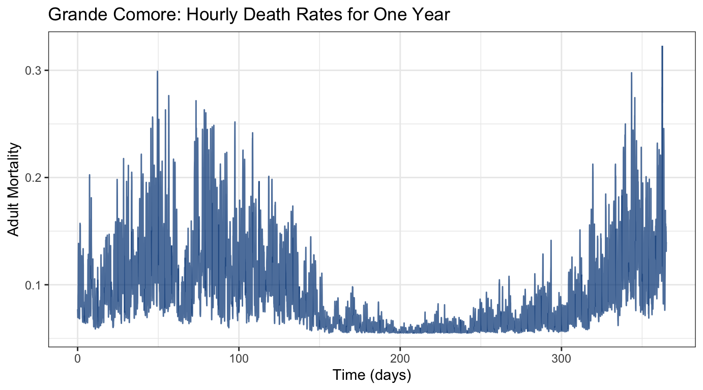
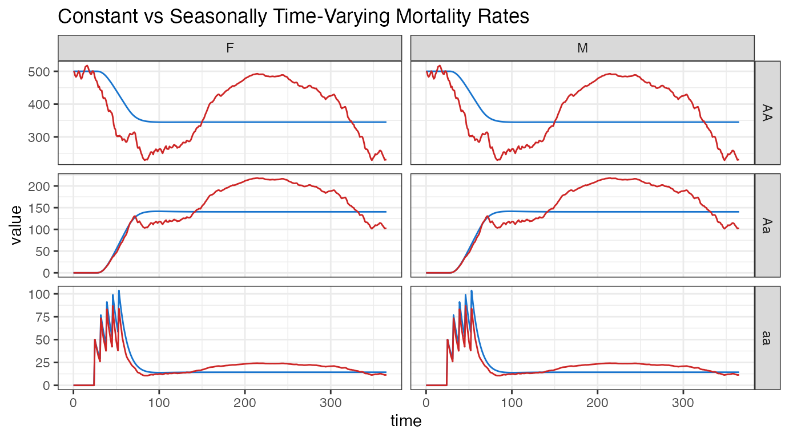

inhomogeneous.RmdThe Stochastic Petri net (SPN) framework used in MGDrivE2 allows for different functional forms of the hazard functions (or rates, if the model is being interpreted as a set of ordinary differential equations, ODEs. We use the terms hazard/rate function interchangeably). This means that time-dependent/inhomogeneous rates are relatively simple to incorporate into the model, without even changing the underlying Petri Net. We remark here that exact simulation of time-inhomogeneous stochastic processes is difficult, and the sampling algorithms to support such simulation have not yet been incorporated into MGDrivE2 (ODE simulation will, of course, be “exact”). However, the Poisson time-step sampler provided with MGDrivE2 will be correct as the stochastic time-step approaches zero, and we recommend its use for simulating inhomogeneous, continuous-time Markov chain models. Exact algorithms for simulating time-inhomogeneous processes can be found in the works of Anderson and Thanh. Future development efforts will concentrate on better exact and approximate sampling algorithms.
We start by loading the MGDrivE2 package, as well as the MGDrivE package for access to inheritance cubes, ggplot2 for graphical analysis, and parallel for running stochastic repetitions in parallel.
Let us consider the case where we want to simulate a model in which the transitions made by functions make_transition_male_mort() and make_transition_female_mort(), that is, the adult male and female mosquito mortality, fire at a rate which depends on time. This time-dependence can in general be arbitrarily complex, as long as the rate function returns a non-negative number at any positive time \(t>0\) when it is queried. Therefore various time-inhomogeneous effects can be taken into account in MGDrivE2, from long-term climactic and seasonal changes, to rapidly oscillating changes from diurnal cycles.
Sample data included in MGDrivE2 (mu_ts) provides estimated time-dependent adult mortality rates from the Comoros Islands, between Mozambique and Madagascar. These are hourly death rates over the course of an entire year, for Grande Comore, Moheli, and Anjouan.
First, we load the mu_ts object, which is a matrix of hourly death rates. Now we want to interpolate the death rates into a function that can return a death rate at any time in the interval \(0<t<365\). We could do this with a variety of methods, including splines and other smoothing algorithms, but for now we will use a simple step function with steps every hour, created with the function stepfun().
# load mortality data
data(mu_ts)
# vector of hourly timesteps
# unit is in days, so 24 steps per day, 365 days
tt_ts <- 1:nrow(mu_ts)/24
# exaggerated amplitude of Grande Comore mortality rate, for visual effect
mu_ts_par <- mu_ts[ ,1] + ( (mu_ts[ ,1] - mean(mu_ts[ ,1]) ) * 50)
# approximating step function
step_approx <- stepfun(x = tt_ts, y = c(mu_ts_par[1], mu_ts_par),
f = 0, right = FALSE)For clarity, we plot the approximating function evaluated at each hour over the year:
# long-form for ggplot2
df_ts <- data.frame("time" = tt_ts, "mu" = step_approx(v = tt_ts))
# plot
ggplot(data = df_ts) +
geom_line(aes(x = time, y = mu), alpha = 0.75, color = "dodgerblue4") +
xlab("Time (days)") +
ylab("Adult Mortality") +
theme_bw() +
ggtitle("Grande Comore: Hourly Death Rates for One Year")
We see that the data trends in a cyclic manner, consistent with proposed seasonality throughout the year. Mosquito mortality is highest in the early spring (days 50-150, approximately March to the end of May) and around the end of the year (days 325-365, the end of November through December).
We need to setup rate functions which correctly return time-dependent rates. First, we make a brief digression into the mathematical consequences and then we show how to implement them into MGDrivE2
Call \(\mu\) a rate function that is time-homogeneous, meaning \(\mu(t) = \mu, t \in [0,\infty)\); for a continuous-time discrete event model, this means that the time between events is exponentially distributed. Another way of saying this is that the counting process (\(N(t)\)) that counts how many times the event has “fired” (occurred) by time \(t\) is a Poisson process, that is the number of events at time \(t\) follows a Poisson distribution with parameter \(\mu \cdot t\). Consequently, if all events (transitions) have rates that are time-homogeneous functions then the entire model is a continuous-time Markov chain (CTMC). One reason we like CTMC models is that they incorporate stochasticity in a “mechanistic” way and have deep connections to classic ODE models, a mainstay of mathematical modelling. For a recent review of the relationship, using epidemic models as an example, see work by Linda Allen.
Now, let the rate function depend on time, meaning \(\mu(t) \geq 0, t \in [0,\infty)\). We need to be careful now: while the rate function depends on time, it does not depend on age; that is, if the event is going to the grocery store, perhaps Alice goes to the grocery store at a different rate each day of the week, but if the rate does not depend at all on how long she has been waiting to go to the store (and has not yet), then we have a process that is time-dependent but not age-dependent. In other words, it is still a Markov process, but it is a time-inhomogeneous Markov process even though the inter-event times no longer follow an exponential distribution. In MGDrivE2 we approximate an age-dependent (semi-Markov process) rate of egg/larvae/pupae development by using an Erlang distribution, which is constructed by summing exponential waiting times. If the rate parameter of the Erlang distribution varies with time, then we can simulate time-inhomogeneous semi-Markov processes.
To make adult mortality rates time-dependent, we will need to replace the functions make_male_mort_haz() and make_female_mort_haz() with versions that return time-dependent rate functions. First, we observe the time-inhomogeneous rate function associated with female mortality (the function for male mortality is very similar):
make_female_mort_haz <- function(trans, u, cube, params, exact = TRUE, tol = 1e-8){
# rate constants
muF <- params$muF
# which places have input arcs to this transition
s <- trans$s
# weights of those arcs
w <- trans$s_w
# omega is dependent on genotype
f_gen <- strsplit(x = u[s], split = "_", fixed = TRUE)[[1]][2]
omega <- cube$omega[f_gen]
# return the hazard function
if(exact){
# EXACT hazards (check enabling degree: for discrete simulation only)
return(
function(trans,M){
if(w <= M[s]){
return(muF * omega * M[s])
} else {
return(0)
}
}
)
} else {
# APPROXIMATE hazards (tolerance around zero; for continuous approximation only)
return(
function(trans,M){
haz <- muF * omega * M[s]
if(haz < tol){
return(0)
} else {
return(haz)
}
}
)
}
# end of function
}The rate of the adult female mosquito mortality event firing is \(\mu_{F} \cdot \omega \cdot M[s]\), where \(M[s]\) is the number of adult female tokens. We want to make it time dependent via \(\mu_{F}(t) \cdot \omega \cdot M[s]\), where \(\mu(t)\) comes from our interpolating function made with stepfun(). To do so, we write a new function, make_female_mort_haz_inhom(). Note that we preform type checking of the object muF to make sure it is indeed a function, and that the returned function closure evaluates it at the input time muF(t).
make_female_mort_haz_inhom <- function(trans, u, cube, params,
exact = TRUE, tol = 1e-8){
# mortality is a time-dependent hazard
muF <- params$muF
if(typeof(muF) != "closure"){
stop("Inhomogeneous hazard 'make_female_mort_haz_inhom', ",
"'muF' in 'params' list needs to be a function")
}
# which places have input arcs to this transition
s <- trans$s
# weights of those arcs
w <- trans$s_w
# omega is dependent on genotype
f_gen <- strsplit(x = u[s], split = "_", fixed = TRUE)[[1]][2]
omega <- cube$omega[f_gen]
# return the hazard function
if(exact){
# EXACT hazards (check enabling degree: for discrete simulation only)
return(
function(t,M){
if(w <= M[s]){
return(muF(t) * omega * M[s])
} else {
return(0)
}
}
)
} else {
# APPROXIMATE hazards (tolerance around zero; for continuous approximation only)
return(
function(t,M){
haz <- muF(t) * omega * M[s]
if(haz < tol){
return(0)
} else {
return(haz)
}
}
)
}
# end of function
}We follow a similar procedure for the adult male mortality. The function is almost identical.
make_male_mort_haz_inhom <- function(trans, u, cube, params,
exact = TRUE, tol = 1e-8){
# mortality is a time-dependent hazard
muM <- params$muM
if(typeof(muM) != "closure"){
stop("Inhomogeneous hazard 'make_male_mort_haz_inhom', ",
"value 'muM' in 'params' list needs to be a function")
}
# which places have input arcs to this transition
s <- trans$s
# weights of those arcs
w <- trans$s_w
# omega is dependent on genotype
m_gen <- strsplit(x = u[s], split = "_", fixed = TRUE)[[1]][2]
omega <- cube$omega[m_gen]
# return the hazard function
if(exact){
# EXACT hazards (check enabling degree: for discrete simulation only)
return(
function(t,M){
if(w <= M[s]){
return(muM(t) * omega * M[s])
} else {
return(0)
}
}
)
} else {
# APPROXIMATE hazards (tolerance around zero; for continuous approximation only)
return(
function(t,M){
haz <- muM(t) * omega * M[s]
if(haz < tol){
return(0)
} else {
return(haz)
}
}
)
}
# end of function
}Now that we have time-dependent hazard functions, we also need to replace the hazard generating function, so that our time-dependent functions are used. The package provided function, spn_hazards(), generates all of our standard hazard functions. Below, we replace parts of this function for time-inhomogeneous hazards: the only differences are for transition types "male_mort" and "female_mort", where we drop in our new functions.
spn_hazards_lifecycle_node_inhom <- function(spn_P, spn_T, cube, params,
log_dd = TRUE, exact = TRUE,
tol = 1e-12, verbose = TRUE){
if(tol > 1e-6 & !exact){
warning("warning: hazard function tolerance ",tol," is large; ",
"consider tolerance < 1e-6 for sufficient accuracy\n")
}
if(log_dd){
if(!("K" %in% names(params))){
stop("Specified logistic (carrying capacity) density-dependent larval ",
"mortality, please specify parameter 'K' in params")
}
} else {
if(!("gamma" %in% names(params))){
stop("Specified Lotka-Volterra (carrying capacity) density-dependent ",
"larval mortality, please specify parameter 'gamma' in params")
}
}
# transitions and places
v <- spn_T$v
u <- spn_P$u
n <- length(v)
# get male and larvae indices
l_ix <- as.vector(spn_P$ix[[1]]$larvae)
m_ix <- spn_P$ix[[1]]$males
# the hazard functions
h <- setNames(object = vector("list",n), nm = v)
if(verbose){
pb <- txtProgressBar(min = 1,max = n,style = 3)
pp <- 1
cat(" --- generating hazard functions for SPN --- \n")
}
# make the hazards
for(t in 1:n){
type <- spn_T$T[[t]]$class
# make the correct type of hazard
if(type == "oviposit"){
h[[t]] <- MGDrivE2:::make_oviposit_haz(trans = spn_T$T[[t]], u = u,
cube = cube, params = params,
exact = exact, tol = tol)
} else if(type == "egg_adv"){
h[[t]] <- MGDrivE2:::make_egg_adv_haz(trans = spn_T$T[[t]], u = u,
cube = cube, params = params,
exact = exact, tol = tol)
} else if(type == "egg_mort"){
h[[t]] <- MGDrivE2:::make_egg_mort_haz(trans = spn_T$T[[t]], u = u,
cube = cube, params = params,
exact = exact, tol = tol)
} else if(type == "larvae_adv"){
h[[t]] <- MGDrivE2:::make_larvae_adv_haz(trans = spn_T$T[[t]], u = u,
cube = cube, params = params,
exact = exact,tol = tol)
} else if(type == "larvae_mort"){
if(log_dd){
h[[t]] <- MGDrivE2:::make_larvae_mort_haz_log(trans = spn_T$T[[t]], u = u,
l_ix = l_ix, node = 1,
cube = cube, params = params,
exact = exact, tol = tol)
} else {
h[[t]] <- MGDrivE2:::make_larvae_mort_haz_lk(trans = spn_T$T[[t]], u = u,
l_ix = l_ix, node = 1,
cube = cube, params = params,
exact = exact, tol = tol)
}
} else if(type == "pupae_adv"){
h[[t]] <- MGDrivE2:::make_pupae_adv_haz(trans = spn_T$T[[t]], u = u,
cube = cube, params = params,
exact = exact, tol = tol)
} else if(type == "pupae_mort"){
h[[t]] <- MGDrivE2:::make_pupae_mort_haz(trans = spn_T$T[[t]], u = u,
cube = cube, params = params,
exact = exact, tol = tol)
} else if(type == "pupae_2m"){
h[[t]] <- MGDrivE2:::make_pupae_2male_haz(trans = spn_T$T[[t]], u = u,
cube = cube, params = params,
exact = exact, tol = tol)
} else if(type == "pupae_2f"){
h[[t]] <- MGDrivE2:::make_pupae_2female_haz(trans = spn_T$T[[t]], u = u,
m_ix = m_ix, cube = cube,
params = params, exact = exact,
tol = tol)
} else if(type == "male_mort"){
# inhomogeneous male mortality
h[[t]] <- make_male_mort_haz_inhom(trans = spn_T$T[[t]], u = u ,cube = cube,
params = params, exact = exact, tol = tol)
} else if(type == "female_mort"){
# inhomogeneous female mortality
h[[t]] <- make_female_mort_haz_inhom(trans = spn_T$T[[t]], u = u, cube = cube,
params = params, exact = exact, tol = tol)
} else if(type == "pupae_2unmated"){
h[[t]] <- MGDrivE2:::make_pupae_2unmated_haz(trans = spn_T$T[[t]], u = u,
m_ix = m_ix, cube = cube,
params = params, exact = exact,
tol = tol)
} else if(type == "female_unmated_mate"){
h[[t]] <- MGDrivE2:::make_unmated_2female_haz(trans = spn_T$T[[t]], u = u,
m_ix = m_ix, cube = cube,
params = params, exact = exact,
tol = tol)
} else if(type == "female_unmated_mort"){
h[[t]] <- make_female_mort_haz_inhom(trans = spn_T$T[[t]], u = u, cube = cube,
params = params, exact = exact, tol = tol)
} else {
stop(paste0("error in making hazard function for unknown class type: ",type))
}
if(verbose){setTxtProgressBar(pb,t)}
} # end loop
if(verbose){
close(pb)
cat(" --- done generating hazard functions for SPN --- \n")
}
return(list("hazards"=h, "flag"=exact))
} # end functionMuch of the following setup is from the “MGDrivE2: One Node Lifecycle Dynamics” vignette, with small adaptations for the time-inhomogeneous simulations.
In a familiar procedure, we define parameters for the simulation. Note that we use the mean of the time-dependent mortality as the equilibrium value, we will use this value to run a set of time-homogeneous simulations to compare results.
We also set the simulation time for 1 year, as our mortality data spans a year. The data is stored daily, and we run a basic Mendelian inheritance pattern.
# number of adult female mosquitoes
NF <- 500
# entomological parameters
theta <- list(
qE = 1/4,
nE = 2,
qL = 1/3,
nL = 3,
qP = 1/6,
nP = 2,
muE = 0.05,
muL = 0.15,
muP = 0.05,
muF = mean(mu_ts[,1]),
muM = mean(mu_ts[,1]),
beta = 16,
nu = 1/(4/24)
)
# simulation parameters
tmax <- 365
dt <- 1
# basic inheritance pattern
cube <- MGDrivE::cubeMendelian()With parameters defined, we can setup the places and transition in our Petri Net. These structural components will be the same for all of the simulations, time dependent and independent.
Since equilibrium is calculated at the average adult mortality over the year, we use the parameters defined above (theta). However, the parameters returned by the equilibrium_lifeycle() function, namely initialCons$params$muF and muM (adult mortality rates), need to be replaces with our time-inhomogeneous step function.
# calculate equilibrium and setup initial conditions
# outputs required parameters in the named list "params"
# outputs intial equilibrium for adv users, "init
# outputs properly filled initial markings, "M0"
initialCons <- equilibrium_lifeycle(params = theta, NF = NF, log_dd = TRUE,
spn_P = SPN_P, cube = cube)
# store homogenous params
theta_hom <- initialCons$params
# update params for inhomogeneous hazards (these are function closures)
initialCons$params$muF <- step_approx
initialCons$params$muM <- step_approxNow we are ready to make the vectors of hazards. We need four vectors to compare four different model formulations: time-homogeneous and inhomogeneous, for ODE and CTMC simulations.
# ODE (inhomogeneous) hazards
approx_hazards <- spn_hazards_lifecycle_node_inhom(spn_P = SPN_P, spn_T = SPN_T,
cube = cube,
params = initialCons$params,
exact = FALSE, tol = 1e-8,
verbose = FALSE)
# ODE (homogeneous) hazards
approx_hazards_hom <- spn_hazards(spn_P = SPN_P, spn_T = SPN_T, cube = cube,
params = theta_hom, type = "life", log_dd = TRUE,
exact = FALSE, tol = 1e-8, verbose = FALSE)
# CTMC (inhomogeneous) hazards
exact_hazards <- spn_hazards_lifecycle_node_inhom(spn_P = SPN_P, spn_T = SPN_T,
cube = cube,
params = initialCons$params,
exact = TRUE, verbose = FALSE)
# CTMC (homogeneous) hazards
exact_hazards_hom <- spn_hazards(spn_P = SPN_P, spn_T = SPN_T, cube = cube,
params = theta_hom, type = "life", log_dd = TRUE,
exact = TRUE, verbose = FALSE)Finally, before we run simulations, we set up a release scheme to generate interesting dynamics. We will release 50 adult females and males, with homozygous recessive alleles, every week for five weeks, starting at day 25. Remember, it is important that the event names match a place name in the simulation. This format is used in MGDrivE2 for consistency with solvers in deSolve.
# releases
r_times <- seq(from = 25, length.out = 5, by = 7)
r_size <- 50
events_f <- data.frame("var" = paste0("F_", cube$releaseType, "_", cube$wildType),
"time" = r_times,
"value" = r_size,
"method" = "add",
stringsAsFactors = FALSE)
events_m <- data.frame("var" = paste0("M_", cube$releaseType),
"time" = r_times,
"value" = r_size,
"method" = "add",
stringsAsFactors = FALSE)
events <- rbind(events_f,events_m)Initially, we should numerically integrate our model, providing exact results for both time homogeneous and inhomogeneous versions. We recommend (and use!) the excellent ODE integration routines from deSolve to solve our deterministic models. Note that we specify the Runge-Kutta 4/5th order method (method = "ode45") in the call to deSolve::ode rather than the default method (method = "lsoda"). This is because the default solvers behave badly with time-dependent rates. We clean up the output using functions from the MGDrivE2 package and put it in a data.frame for plotting below.
# ODE (inhomogeneous) simulation
ODE_out_inhom <- sim_trajectory_R(x0 = initialCons$M0, t0 = 0, tt = tmax, dt = dt,
S = S, hazards = approx_hazards, sampler = "ode",
method = "ode45", events = events, verbose = FALSE)
# summarize
ODE_female_inhom <- summarize_females(out = ODE_out_inhom$state, spn_P = SPN_P)
ODE_male_inhom <- summarize_males(out = ODE_out_inhom$state)
# combine for plotting later
ODE_out_inhom_melt <- rbind(cbind(ODE_female_inhom, "sex" = "F"),
cbind(ODE_male_inhom, "sex" = "M") )
# ODE (homogeneous) simulation
ODE_out_hom <- sim_trajectory_R(x0 = initialCons$M0, t0 = 0, tt = tmax, dt = dt,
S = S, hazards = approx_hazards_hom, sampler = "ode",
method = "ode45", events = events, verbose = FALSE)
# summarize
ODE_female_hom <- summarize_females(out = ODE_out_hom$state, spn_P = SPN_P)
ODE_male_hom <- summarize_males(out = ODE_out_hom$state)
# combine for plotting later
ODE_out_hom_melt <- rbind(
cbind(ODE_female_hom, "sex" = "F"),
cbind(ODE_male_hom, "sex" = "M")
)
ODE_out_inhom_melt$death <- "inhomogeneous"
ODE_out_hom_melt$death <- "homogeneous"
# plot everything together
ggplot(data = rbind(ODE_out_inhom_melt, ODE_out_hom_melt) ) +
geom_path(aes(x = time, y = value,
color = death)) +
facet_grid(genotype ~ sex, scales = "free_y") +
scale_color_manual(values = c("inhomogeneous" = "firebrick3",
"homogeneous" = "dodgerblue3")) +
# final formatting
theme_bw() +
ggtitle("Constant vs Seasonally Time-Varying Mortality Rates") +
guides(color = FALSE)
We run 10 realizations of the stochastic simulations, to get a better sense of the overall variability in trajectories. We can run these repetitions in two ways: using the built-in repetitions provided by MGDrivE2, or running a loop over sim_trajectory_R() to generate repetitions. Both of these are valuable, but in different circumstances. The built-in repetitions provided by MGDrivE2 are deliberately single-threaded (as are all analysis routines), and more efficient than running single repetitions. This is useful for parameter sweeps, where several repetitions of each parameter needs to be run. However, for very large repetitions, it is not practical to run all of the repetitions on a single-thread. In this instance, and when running many parameter combinations, it is better to setup a parallel cluster, and evaluate multiple trajectories at once. For demonstration purposes, we will setup both methods.
We need a few extra parameters for the stochastic realizations, namely the number of realizations and the time-step. We will run 10 repetitions, using a time step equal to one hour.
First we simulate the time-inhomogeneous Markov model, using the built-in repetition wrapper. Please note that this vignette does not run the following simulation code to combat excessive build times; however the code can be run locally after building the Petri net and hazards as done previously in this vignette.
# parameters for stochastic simulations
num_rep <- 10
dt_stoch <- 1/24
# run inhomogeneous simulations
PTS_out_inhom <- sim_trajectory_R(x0 = initialCons$M0, t0 = 0, tt = tmax, dt = dt,
dt_stoch = dt_stoch, S = S, num_reps = num_rep,
hazards = exact_hazards, sampler = "tau",
events = events, verbose = FALSE)
# summarize females/males, add sex for plotting later
PTS_female <- cbind(summarize_females(out = PTS_out_inhom$state, spn_P = SPN_P),
"sex" = "F")
PTS_male <- cbind(summarize_males(out = PTS_out_inhom$state), "sex" = "M")
# reductions for plotting
PTS_inhom_par_unroll <- rbind(PTS_female, PTS_male)
# summarize_* functions return long-form data for ggplot2
# therefore, we take the first rep of data, the sim_time by num_genotypes
# Then, we reorganize the data into an array, and take the mean over every
# repetition
tot_time <- tmax + 1
num_geno <- cube$genotypesN
PTS_inhom_par_unroll_mean <- rbind(
cbind(PTS_female[1:(tot_time * num_geno), c("genotype", "sex", "time")],
"Mean" = as.vector(rowMeans(x = array(data = PTS_female$value,
dim = c(tot_time, num_geno, num_rep)),
dims = 2)) ),
cbind(PTS_male[1:(tot_time * num_geno), c("genotype", "sex", "time")],
"Mean" = as.vector(rowMeans(x = array(data = PTS_male$value,
dim = c(tot_time, num_geno, num_rep)),
dims = 2)) )
)For the time-homogeneous simulation, we will demonstrate how to simulate many trajectories in parallel.
There are many packages available for parallel evaluation in R. The default package within R is the parallel package. Other useful packages include foreach, doSNOW, and future. Because parallel is a base package, we use it to setup a socket cluster (this cluster works on Windows and nix systems) for this example. We then use parallel::clusterSetRNGStream to set independent, reproducible streams of random numbers for each core in the cluster.
# parameters for stochastic simulations
num_core <- 1
M0 <- initialCons$M0
# setup the cluster
cl <- parallel::makePSOCKcluster(names = num_core)
# set parallel seed
parallel::clusterSetRNGStream(cl = cl, iseed = 18438L)
# export required objects to each socket
parallel::clusterExport(cl=cl, varlist=c("M0", "tmax", "dt", "dt_stoch", "S",
"exact_hazards_hom", "events", "SPN_P"))
# load MGDrivE2 on each socket
parallel::clusterEvalQ(cl=cl, expr={library(MGDrivE2)})Finally, we evaluate our function on each cluster using the load-balanced apply statement, parallel::clusterApplyLB(). This will run each repetition, analyze it, and store it in a list for further analysis. In this example, load-balancing is not particularly important, as these simulations are short and small, thus will have fairly consistent run times. Especially for parameter sweeps, some combinations will create significantly more complicated, and thus longer-running, dynamics, making load-balancing an important consideration.
# run homogeneous simulations
PTS_hom_par <- parallel::clusterApplyLB(cl=cl, x=1:num_rep, fun=function(x){
# run trajectory
PTS_out_hom <- sim_trajectory_R(x0 = M0, t0 = 0, tt = tmax, dt = dt,
dt_stoch = dt_stoch, S = S, hazards = exact_hazards_hom,
sampler = "tau",events = events, verbose = FALSE)
# summarize females/males for plotting later
f_sum <- cbind(summarize_females(out = PTS_out_hom$state, spn_P = SPN_P),
"rep"=x, "sex"="F")
m_sum <- cbind(summarize_males(out = PTS_out_hom$state), "rep"=x, "sex"="M")
# return single dataframe
return(rbind(f_sum, m_sum))
})
# stop cluster
parallel::stopCluster(cl)
# summarize data
# the Reduce() call generates a mean of the populations
PTS_hom_par_unroll <- do.call(what = rbind, args = PTS_hom_par)
PTS_hom_par_unroll_mean <- cbind(PTS_hom_par[[1]][ ,c("genotype", "sex", "time")],
"Mean" = Reduce(f = "+", x = lapply(X = PTS_hom_par,
FUN = function(x){x[,3]})
)/num_rep)Finally we combine the data into one plot. The ODE trajectories are plotted as dashed lines, the mean of the stochastic simulations as solid lines, and each individual stochastic trajectory is plotted as a faint curve. Lines in red are the time-inhomogeneous model runs and blue are the time-homogeneous simulations.
# add mortality for plotting
PTS_inhom_par_unroll$death <- "inhomogeneous"
PTS_hom_par_unroll$death <- "homogeneous"
ODE_out_inhom_melt$death <- "inhomogeneous"
ODE_out_hom_melt$death <- "homogeneous"
# plot everything together
ggplot(data = rbind(PTS_inhom_par_unroll, PTS_hom_par_unroll) ) +
geom_path(aes(x = time, y = value, group = interaction(rep, death),
color = death), alpha = 0.15) +
facet_grid(genotype ~ sex, scales = "free_y") +
scale_color_manual(values = c("inhomogeneous" = "firebrick3",
"homogeneous" = "dodgerblue3")) +
# inhomogeneous mean
geom_line(data = PTS_inhom_par_unroll_mean, mapping = aes(x = time, y = Mean),
color = "firebrick4") +
# homogeneous mean
geom_line(data = PTS_hom_par_unroll_mean, mapping = aes(x = time, y = Mean),
color = "dodgerblue4") +
# ODE inhomogeneous
geom_line(data = ODE_out_inhom_melt, mapping = aes(x = time, y = value),
linetype = 2, color = "firebrick4") +
# ODE homogeneous
geom_line(data = ODE_out_hom_melt, mapping = aes(x = time, y = value),
linetype = 2, color = "dodgerblue4") +
# final formatting
theme_bw() +
ggtitle("Constant vs Seasonally Time-Varying Mortality Rates") +
guides(color = FALSE)There is a clear difference in population size over the course of a year. Since we used the average mortality rate to calculate the equilibrium, we see that the time-inhomogeneous simulations center around our time-homogeneous ones. Comparing the dashed-lines (ODE trajectories) to the solid-lines (SPN averages), we see that our stochastic realizations closely follow their deterministic solutions. However, the faint lines indicate significant variation is possible.